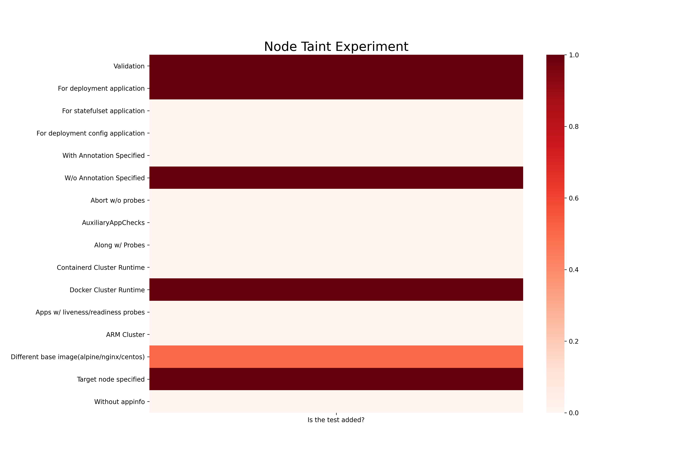
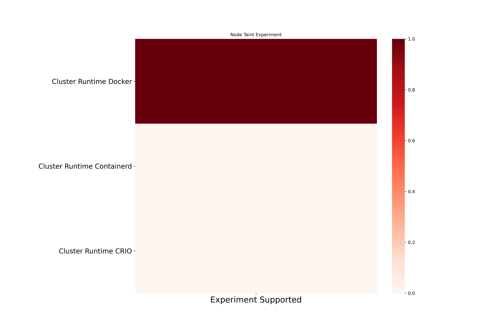
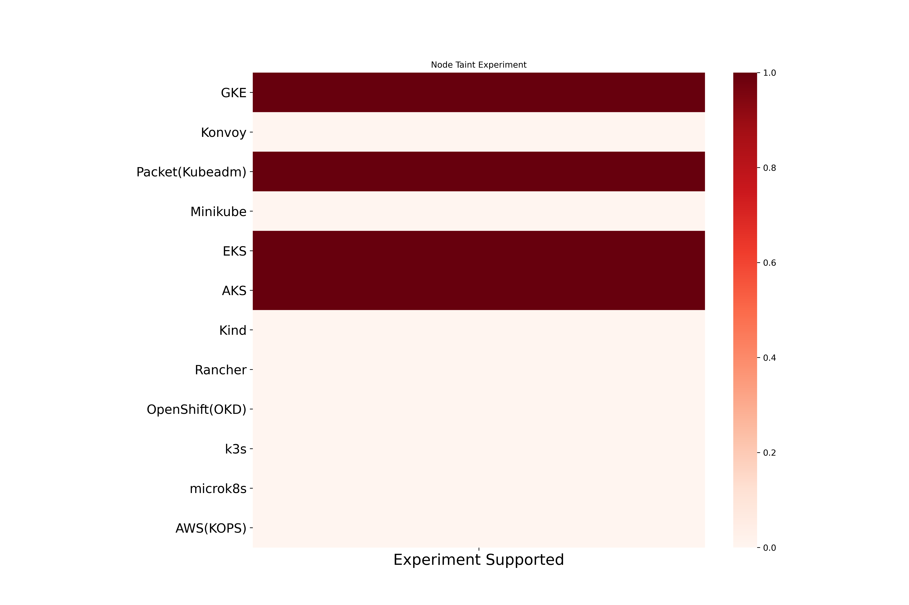

Node Taint Chaos
Node Taint exhaust memory resources on the kubernetes node. Here are the different coverage metrics for the experiment.
Node Taint experiment based coverage

Node Taint cluster runtime based coverage

Node Taint platform based coverage
